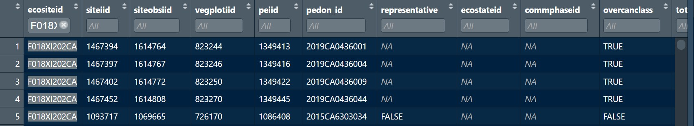

Chapter 7 ES Verification
7.1 Prioritization
7.1.1 Guidance from National Instruction
This section is intended to assist with ES Verification projects. The National Instruction with full details of verification project requirements can be accessed here - Part 306 – Ecological Site Inventory and Ecological Site Description.
This workflow addresses many of the requirements outlined section 306.6.C.2 from the National Instruction, shown in the photo below:
7.1.2 Goal of with workflow
The goal of this methodology is to determine what data is available to use for ES Verification Projects. It reports on data elements listed in the ES Verification standards as well as other elements that are not required but are indicative of data quality, including:
- correlated pedons & vegplots (including whether they are colocated)
- use of states and phases
- canopy cover by species (plant symbol & cover)
- strata
- number components correlated to ecosite
- number of acres
- component pedons
- taxonomic level (i.e., series, family, taxadjunct, etc.)
There are two main outputs. For both of the visuals below there are more columns than are able to be shown:
- The first shows the amount of supporting data for the ecosites in your MLRA.

- The second allows users to look at specific ecosites and determine what sites have the best data and could be used as supporting evidence of the ES.

7.1.3 Querying NASIS
This process requires two different NASIS queries. First to access site/pedon/vegplot data, and the other to access component data associated with your MLRA.
Before getting started, clear selected set.
Query 1 (site/pedon/vegetation plot) Run “SSRO_Southwest > Sites by ecositeid with %” (not listed as ready for use) using an appropriate pattern for Ecological Site ID (e.g., %018X% for MLRA18)
Query 2 (components) Use https://nroe.shinyapps.io/MapunitsInMLRA/ to access all mukeys in your MLRA of interest. Mukeys are batched into groups of 2100 parameters on each tab, as this is the limit that NASIS accepts as arguments in a query. Read the instructions on the page for details. If multiple tabs are populated, the query will have to be run multiple times. Use these mukeys as input into “NSSC Pangaea > Area/Legend/Mapunit/DMU by record ID - LMAPUNITIID”.
7.1.4 Run workflow
Access data from NASIS
# library
library(soilDB)
library(dplyr)
# access veg data
MLRA18_veg <- ecositer::create_veg_df(from = "SS")
# access pedon data
MLRA18_pedons <- fetchNASIS(from = "pedons")
# access component data
MLRA18_components <- fetchNASIS(from = "components",
fill = TRUE,
duplicates = TRUE)
# access component pedon data - you will be notified that, "some linked pedons not in selected set or local database"
MLRA18_component_pedons <- soilDB::get_copedon_from_NASIS_db()Summarize data
# Manipulating data ------------------------------------------------------
# aggregate abundance columns
MLRA18_veg_agg <- ecositer::QC_aggregate_abundance(veg_df = MLRA18_veg)
# select component columns of interest and calculate comp_acres
MLRA18_components_mod <- MLRA18_components |> aqp::site() |>
dplyr::select(mukey, coiid, compname, majcompflag, compkind, ecosite_id, muacres, comppct_r) |>
dplyr::mutate(comp_acres = muacres * comppct_r/100,
ecositeid = ecosite_id)
# Joining data -----------------------------------------------------------
# join component pedons to pedons
MLRA18_pedons_coped <- aqp::site(MLRA18_pedons) |> dplyr::left_join(MLRA18_component_pedons |>
dplyr::mutate(peiid = as.character(peiid)) |>
dplyr::select(-upedonid))
# join pedon data to veg data
MLRA18_veg_peiid <- MLRA18_veg_agg |> dplyr::left_join(MLRA18_pedons_coped |>
dplyr::select(siteobsiid, peiid, coiid, pedon_id, representative, rvindicator) |>
dplyr::mutate(siteobsiid = as.character(siteobsiid)) |>
unique() |>
dplyr::group_by(siteobsiid) |>
dplyr::arrange(pedon_id) |>
dplyr::slice(1))
# Summarizing data -------------------------------------------------------
MLRA18_triage <- MLRA18_veg_peiid |>
dplyr::group_by(ecositeid, siteiid, siteobsiid, vegplotiid, peiid, pedon_id, representative, ecostateid, commphaseid) |>
dplyr::summarise(overcanclass = any(!is.na(overstorycancovtotalclass)),
totcanclass = any(!is.na(cancovtotalclass)),
heighclasslow = any(!is.na(plantheightcllowerlimit)),
heighclasshigh = any(!is.na(plantheightclupperlimit)),
planttypegroup = any(!is.na(planttypegroup)),
akstratumclass = any(!is.na(akstratumcoverclass)),
vegstrata = any(!is.na(vegetationstratalevel)),
plantsym = any(!is.na(plantsym)),
speciescancov = any(!is.na(pct_cover)))
MLRA18_triage_summary <- MLRA18_triage |>
dplyr::mutate(plant_abund = plantsym + speciescancov,
heightlimit = heighclasslow + heighclasshigh) |>
dplyr::mutate(plant_abund_logic = ifelse(plant_abund == 2, TRUE, FALSE),
heightlimit_logic = ifelse(heightlimit == 2, TRUE, FALSE)) |>
dplyr::mutate(strata = heightlimit_logic + planttypegroup + akstratumclass + vegstrata) |>
dplyr::mutate(strata_logic = ifelse(strata >= 1, TRUE, FALSE)) |>
dplyr::mutate(sum_logic = sum(c(plant_abund_logic,
strata_logic,
overcanclass,
totcanclass))) |>
dplyr::mutate(sum_logic_no_can = sum(c(plant_abund_logic,
strata_logic)))
MLRA18_ecosite_triage_summary <-
MLRA18_triage_summary |>
dplyr::group_by(ecositeid) |>
dplyr::summarise(pedons = sum(!is.na(peiid)),
ecostateid = sum(!is.na(ecostateid)),
commphaseid = sum(!is.na(commphaseid)),
plant_abund = sum(!is.na(plant_abund_logic)),
strata = sum(!is.na(strata_logic))) |>
dplyr::left_join(MLRA18_components_mod) |>
dplyr::group_by(ecositeid, pedons, ecostateid, commphaseid, plant_abund,
strata) |>
dplyr::summarise(components = sum(!is.na(coiid)),
acres = sum(comp_acres, na.rm = TRUE),
majcomp = sum(majcompflag, na.rm = TRUE),
series = sum(compkind == "series", na.rm = TRUE),
taxadjunct = sum(compkind == "taxadjunct", na.rm = TRUE),
family = sum(compkind == "family", na.rm = TRUE),
tax_above_fam = sum(compkind == "taxon above family", na.rm = TRUE),
variant = sum(compkind == "variant", na.rm = TRUE),
misc = sum(compkind == "miscellaneous area", na.rm = TRUE))## # A tibble: 6 × 15
## # Groups: ecositeid, pedons, ecostateid,
## # commphaseid, plant_abund [6]
## ecositeid pedons ecostateid commphaseid plant_abund strata components acres
## <chr> <int> <int> <int> <int> <int> <int> <dbl>
## 1 F001XA001WA 0 0 0 1 1 0 0
## 2 F018XA201CA 0 0 0 54 54 66 3.29e4
## 3 F018XA202CA 0 0 0 76 76 26 7.00e4
## 4 F018XC110CA 1 1 1 1 1 0 0
## 5 F018XC201CA 22 13 11 383 383 210 4.71e5
## 6 F018XC203CA 20 9 8 48 48 20 2.29e4
## # ℹ 7 more variables: majcomp <int>, series <int>, taxadjunct <int>,
## # family <int>, tax_above_fam <int>, variant <int>, misc <int>## # A tibble: 6 × 26
## # Groups: ecositeid, siteiid, siteobsiid,
## # vegplotiid, peiid, pedon_id,
## # representative, ecostateid [6]
## ecositeid siteiid siteobsiid vegplotiid peiid pedon_id representative
## <chr> <chr> <chr> <chr> <chr> <chr> <int>
## 1 F001XA001WA 1868185 2338844 1173348 <NA> <NA> NA
## 2 F018XA201CA 1867763 2338220 1174740 <NA> <NA> NA
## 3 F018XA201CA 1867773 2338230 1174750 <NA> <NA> NA
## 4 F018XA201CA 1867775 2338232 1174752 <NA> <NA> NA
## 5 F018XA201CA 1867777 2338234 1174754 <NA> <NA> NA
## 6 F018XA201CA 1881378 2338235 1174755 <NA> <NA> NA
## # ℹ 19 more variables: ecostateid <chr>, commphaseid <chr>, overcanclass <lgl>,
## # totcanclass <lgl>, heighclasslow <lgl>, heighclasshigh <lgl>,
## # planttypegroup <lgl>, akstratumclass <lgl>, vegstrata <lgl>,
## # plantsym <lgl>, speciescancov <lgl>, plant_abund <int>, heightlimit <int>,
## # plant_abund_logic <lgl>, heightlimit_logic <lgl>, strata <int>,
## # strata_logic <lgl>, sum_logic <int>, sum_logic_no_can <int>